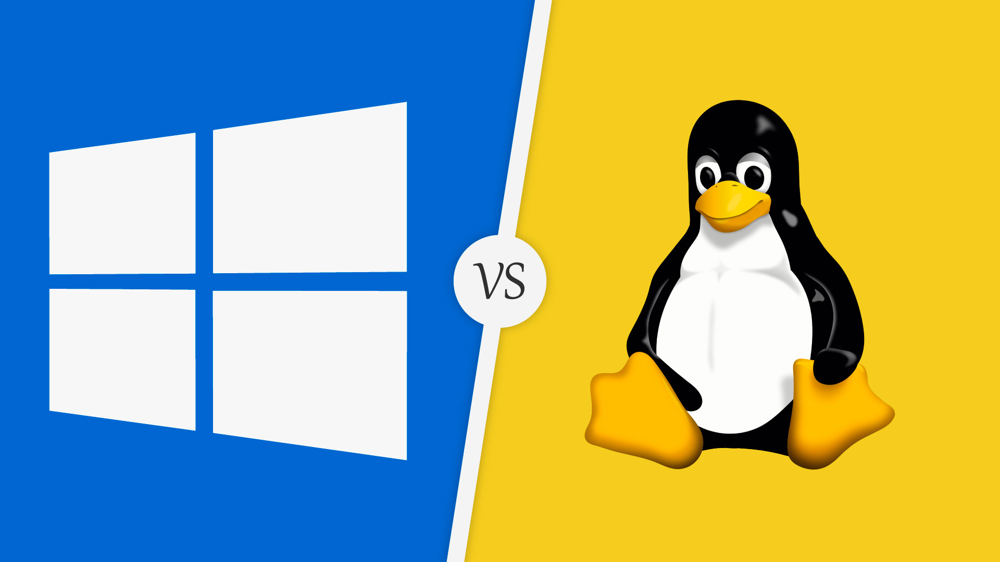

Bem vindo ao meu site sobre Tecnologia e Programação,ficamos felizes em ter você a bordo!

Aqui voce encontra Informaçoes sobre códigos,memes,diversão e muito mais!
Memes:


Informações JavaScript:
Como criar um Hello World em JavaScript/Como criar uma variavel:


Informações Python:
Como criar um Hello World/variavel em Python


Informações sobre sistemas operacionais:
linux ou Windons?

Linux:
Introdução ao Linux:
Desenvolvido como um sistema operacional de código aberto usando a linguagem C e assembly, o Linux é um dos sistemas operacionais mais usados do mundo. O primeiro lançamento do sistema operacional foi feito no ano de 1991 e, portanto, foi o primeiro rival do MS Windows no mercado. Ele também pode ser considerado como o sistema baseado em UNIX o mais facil de se usar.
Este sistema operacional suporta mais de 150 idiomas e qualquer usuário de qualquer país do mundo pode usar o programa para trabalhar,ou modificalo para torna-lo o mais adequado as suas necessidades. como o Linux usa código aberto, o Kernel dele é Monolítico. O sistema operacional tem como alvo os mercados dos usuários em geral.
Vantagens do Linux:Além de ser gratuito, o sistema operacional Linux tem entre as suas vantagens uma gama enorme de customizações e personalizações, sejam aquelas feitas por cada usuários, como as modificações no desktop, sejam as que vem instaladas em suas inúmeras versões existentes.
--------------
Windows:
Parte 1: Introdução ao MS Windows
Desenvolvido pela Microsoft e com lançamento inicial no ano de 1985, o MS Windows é o sistema operacional mais usado no mundo. O sistema operacional foi desenvolvido em linguagens C, C ++ e Assembly. O sistema operacional é de código fechado e possui uma interface gráfica de usuário. O sistema operacional foi desenvolvido e lançado em 137 idiomas e, portanto, tem uma forte base de usuários.
A versão mais recente do sistema operacional é conhecida como Windows 11 e foi lançada em outubro de 2021. O programa é atualizado usando o atualizador do Windows incorporado. É de notar também que o SO é atualizado regularmente pela empresa. É pela mesma razão que as funcionalidades do programa mantêm-se atualizadas.
Vantagens do Windows:O sistema operacional é compatível com todos os principais dispositivos que o usuário pode nomear.
O usuário pode, portanto, organizar o conteúdo facilmente. A busca também é fácil e, portanto, é aconselhável obter este sistema operacional para tornar o trabalho fácil e mais rápido.
Novos recursos, bem como as funcionalidades, também são adicionados ao sistema operacional de tempos em tempos. É, portanto, mais atual que qualquer outro SO no mundo.
______________________________________________________
Parabens,voce chegou ao fim do nosso site!!
Criador:Alexandre Oliveira
Contato:
Linguagens usadas para a criação deste site:
Site totalmente feito em:
Ver código fonte com world: